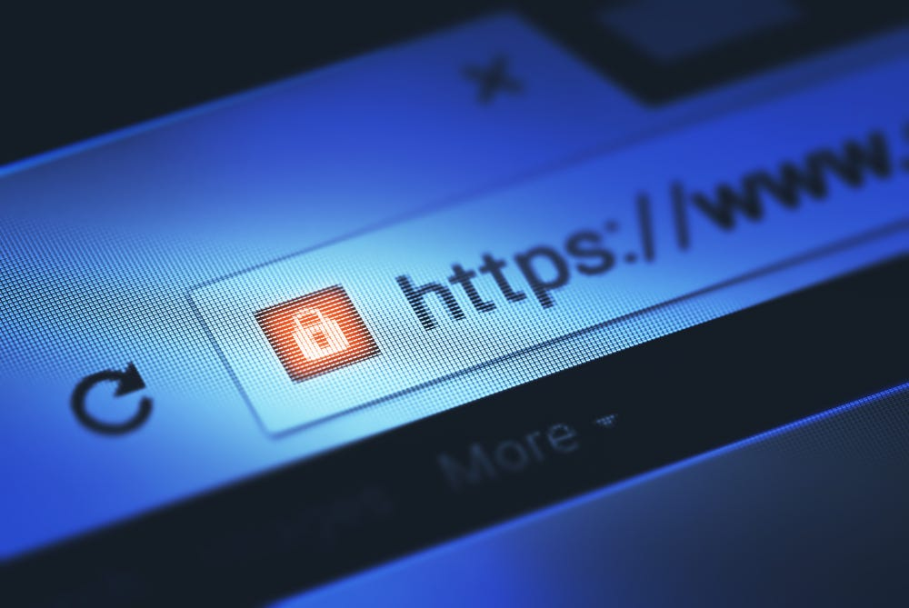

Published on: October 19, 2024 | Publisher: Webn Community
 In today’s digital landscape, branding is more important than ever. Custom URL shorteners have emerged as a powerful tool for businesses looking to enhance their online presence and establish a recognizable brand identity. Here’s why custom URL shorteners are essential for branding success.
1. Brand Recognition: Custom URL shorteners allow you to incorporate your brand name into the link. This creates a memorable and recognizable URL that reinforces your brand identity every time someone clicks on it. For example, a link like `yourbrand.com/product` is more effective than a generic short link.
2. Trust and Credibility: Users are more likely to click on a link that they can trust. Custom short URLs convey professionalism and reliability, making users feel more comfortable clicking through. This trust can significantly increase your click-through rates and improve conversions.
3. Enhanced Marketing Campaigns: Custom URLs can be tailored to specific marketing campaigns or promotions. This enables you to create targeted links that track the performance of various campaigns, allowing for better analysis and optimization of your marketing efforts.
4. Analytics and Insights: Many custom URL shorteners offer built-in analytics that help you track link performance. You can monitor clicks, geographic data, and user behavior, providing valuable insights that inform your branding and marketing strategies.
5. A/B Testing: With custom URLs, you can easily set up A/B testing for different campaigns. By creating variations of your links, you can determine which versions resonate most with your audience, helping you refine your messaging and improve overall effectiveness.
6. Social Media Optimization: Custom short links are especially beneficial on social media platforms where character limits exist. A concise, branded link not only saves space but also looks cleaner and more appealing, encouraging users to engage with your content.
7. Building Loyalty: Custom URLs foster a sense of community and loyalty among your audience. By using links that reflect your brand, you reinforce your identity and encourage repeat interactions with your content.
In conclusion, custom URL shorteners are more than just tools for shortening links; they are vital components of a successful branding strategy. By using branded short URLs, businesses can enhance recognition, build trust, optimize marketing campaigns, and gain valuable insights. Embrace custom URL shorteners as a key part of your branding efforts to achieve greater success in today’s competitive landscape!